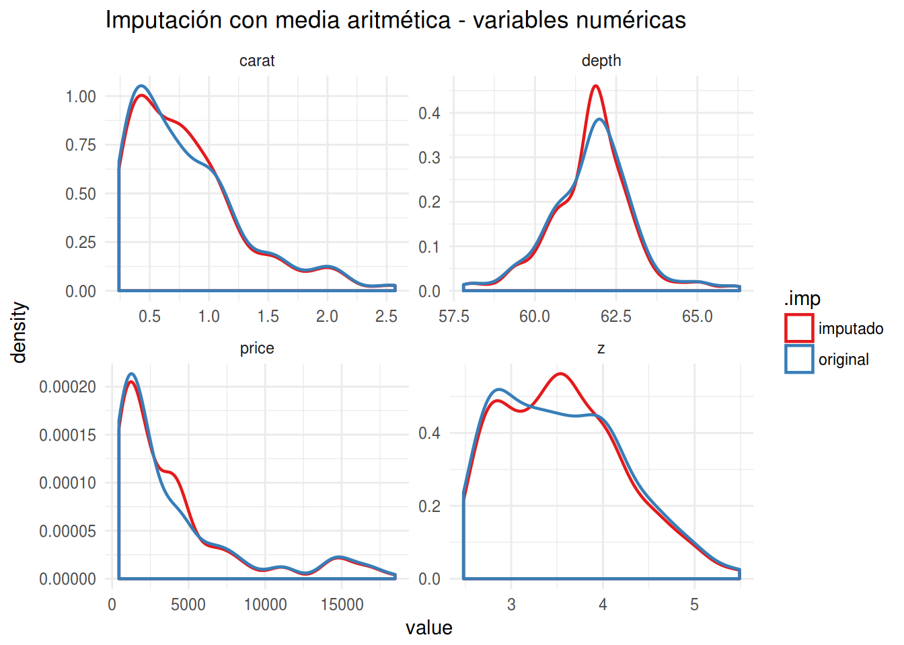

Imputación de datos
Imputación de datos en R
Intro
Está sentado frente al ordenador, preparado para aplicar todo el conocmiento que posee para explotar una base de datos. Pero se encuentra con un problema… Faltan datos. Casos incompletos, escalas sin pasar, dropouts, o que el desgraciado interno asignado a pasar los datos era un poco vago… En ciencias y sobretodo en las ciencias de la salud es común encontrar bases de datos incompletas. Para él análisis de datos usualmente es necesario elegir alguna metodología para lidiar con estos valores ausentes (NA’s).
Una alternativa es eliminar los NA’s. Ya está!, fuera con todos los casos incompletos, pero esto tiene dos proeblmas. 1. A menos número de casos disminuye la potencia del estudio, y esto no es bueno, no? 2. Hay un sesgo de selección si es que la falta de datos tiene relación con alguna de las variables relevantes.
Pues ¿y que diablos hacemos entonces? pues podemos imputar los datos que faltan.
Explorar NA
El primer paso como en cualquier trabajo de análisis de datos decente, implica un análisis exploratorio de los NA. En R esto esto se cosigue fácil y de manera gráfica con a librería VIM.
# cargamos las librerías necesarias
pacman::p_load(tidyverse, VIM, lattice, missForest, mice)set.seed(41)
# creamos un patrón aleatório de NA
mis_datos <-
diamonds %>%
sample_n(200) %>%
prodNA(noNA = 0.08)
mis_datos %>%
aggr(col=mdc(1:2), numbers=F, sortVars=T,
cex.axis=.8, gap=3, only.miss = F, combined = F,
ylab=c("Proportion of missingness","Missingness Pattern"))
##
## Variables sorted by number of missings:
## Variable Count
## cut 0.105
## table 0.100
## x 0.095
## y 0.095
## depth 0.075
## price 0.075
## z 0.075
## color 0.065
## clarity 0.060
## carat 0.055La funcion VIM::aggr permite tener una representación gráfica de los NA y permite ver el patrón que estos presentan. En general se pueden establecer tres tipos de patrones de valores ausentes:
1. NA totalmente aleatorio (“missing completely at random, o MCAR”) en el que no hay un patrón establecido. El evento por el que hay un valor ausente es independiente de las variables observadas u otros parámetros de interés. Como sospechais es el patrón menos habitual…
NA aleatorio (“missing at random, o MAR”), en el cual la ausencia de datos no completamente aleatoria, pero en la que se puede dar cuenta de la iformación faltante con los datos existentes, es decir, en la que se puede hacer una estimacion coheerntes de los datos faltantes.
NA no aleatorio (“missing not at random o MNAR), en el que hay una relacion directa entre el motivo de la ausencia de datos y su propio valor.
Métodos de imputación de datos
tenedencia central
Una primera alternbativa, la de toda la vida, es imputar con algún estadístico de tendencia central (media, mediana, moda). Es decir, cambiamos todos los NA por el promedio de los datos que si tenemos. ¿Ventajas? Facil de hacer. ¿Problema? stamos disminyendo artificialmente la variabilidad de la muestra. La implementación en R es realativamente fácil como se muestra a continuación.
calc_moda <- function(x) {
z <- table(as.vector(x))
names(z)[z == max(z)]
}
imp_media <-
mis_datos %>%
# Media para variables numéricas
mutate_at(
vars(carat, depth:z),
funs(ifelse(is.na(.), mean(., na.rm = T), .))) %>%
# Moda para variables categóricas
mutate_at(
vars(cut:clarity),
funs(as.ordered(ifelse(is.na(.), calc_moda(.), as.character(.)))))check
Con los datos imputados podemos ver cuanto se ajusta nuestro invento con la base original
mis_datos$.imp <- "original"
imp_media$.imp <- "imputado"
imp_media %>%
rbind(mis_datos) %>%
select(carat, depth, price, z, .imp) %>%
gather(key, value, -.imp) %>%
ggplot(aes(x = value, color = .imp))+
geom_density(size=0.8) +
facet_wrap(~ key, scales = "free") +
scale_color_brewer(type = "qual", palette = 6, direction = 1) +
theme_minimal() + labs(title="Imputación con media aritmética - variables numéricas")
imp_media %>%
rbind(mis_datos) %>%
select(color, cut, .imp) %>%
gather(key, value, -.imp) %>%
ggplot(aes(x = value, fill = .imp))+
geom_bar(alpha = 0.8, position = position_dodge()) +
facet_wrap(~ key, scales = "free") +
scale_fill_brewer(type = "qual", palette = 6, direction = 1) +
theme_minimal() + labs(title="Imputación con moda - variables categóricas")
Es facilmnte apreciable como tqnto en las variables numéricas como en las categóricas, la tendencia central está exagerada y se aleja de la distribución original.
Imputación multiple
una de las metodologias mas utilizadas para la obtencion de una uestra imputada mas correcta es la que utliza tecnicas de imputcoin multiple, es decir imputar mas de una base de datos. Esto permite utlizar las n bases imputadas para hacer n modelos, que posteriormente se poolean (lo siento, no se como diablos se traduce eso…) con la ventaja de que el model final da cuenta de las pequeñas diferencias de las bases imputadas. LA mayoría de las librería permite calibrar bastante la generacion de las bases, además de la metodología para la imputacion de los valores. Uno de los paquetes mejor documentados es el mice
El proceso es relativamente facil y esta muy bien docuemntado en las viñetas. El método de imutación por deficnicion es el predictive mean matching para variables numéricas, logistic imputation para categoriales binarias y polytomous regression imputation para categoriales de mas de dos factores.
pacman::p_load(mice)
imp_mice <- mice(select(mis_datos, -.imp))##
## iter imp variable
## 1 1 carat cut color clarity depth table price x y z
## 1 2 carat cut color clarity depth table price x y z
## 1 3 carat cut color clarity depth table price x y z
## 1 4 carat cut color clarity depth table price x y z
## 1 5 carat cut color clarity depth table price x y z
## 2 1 carat cut color clarity depth table price x y z
## 2 2 carat cut color clarity depth table price x y z
## 2 3 carat cut color clarity depth table price x y z
## 2 4 carat cut color clarity depth table price x y z
## 2 5 carat cut color clarity depth table price x y z
## 3 1 carat cut color clarity depth table price x y z
## 3 2 carat cut color clarity depth table price x y z
## 3 3 carat cut color clarity depth table price x y z
## 3 4 carat cut color clarity depth table price x y z
## 3 5 carat cut color clarity depth table price x y z
## 4 1 carat cut color clarity depth table price x y z
## 4 2 carat cut color clarity depth table price x y z
## 4 3 carat cut color clarity depth table price x y z
## 4 4 carat cut color clarity depth table price x y z
## 4 5 carat cut color clarity depth table price x y z
## 5 1 carat cut color clarity depth table price x y z
## 5 2 carat cut color clarity depth table price x y z
## 5 3 carat cut color clarity depth table price x y z
## 5 4 carat cut color clarity depth table price x y z
## 5 5 carat cut color clarity depth table price x y zimp_mice %>%
complete(action = "long") %>%
select(-.id) %>%
rbind(mis_datos) %>%
select(carat, depth, price, z, .imp) %>%
gather(key, value, -.imp) %>%
ggplot(aes(x = value, color = .imp))+
geom_density(size = 0.8, alpha = .8) +
facet_wrap(~ key, scales = "free") +
scale_color_brewer(type = "seq", palette = 8) +
theme_minimal() + labs(title="Imputación con media aritmética - variables numéricas")## Warning: Removed 56 rows containing non-finite values (stat_density).
imp_mice %>%
complete(action = "long") %>%
select(-.id) %>%
select(color, cut, .imp) %>%
gather(key, value, -.imp) %>%
ggplot(aes(x = value, fill = .imp))+
geom_bar(alpha = 0.8, position = position_dodge()) +
facet_wrap(~ key, scales = "free") +
scale_fill_brewer(type = "seq", palette =8) +
theme_minimal() + labs(title="Imputación con moda - variables categóricas")## Warning: attributes are not identical across measure variables;
## they will be dropped
Se ajusta mejor no? y eso que no fue necesario tocar los parámetros por definicion y con sólo 5 iteraciones. El paquete mice tiene un montón de funciones para ajustar el modelo de prediccion. Si les interesa esta aproximacion metanse a leer las viñetas, que están super bien explicadas. mice ademas de los modelos poor definicion acepta varios tipos de modelamiento, inluyendo modelos bayesianos, analissi linear discriminante, y modelos de aperndieaje de maquinas mas coplejos como el Random Forest.
mice ademas tiene metodos para una serie de modelos de r base como las funiones que permiten utlizar la clase mids que son los objetos de imputqciones multiple que esxupe el r
Para PCA
Un problema de las imputaciones multiples es que depeneindo del trato que daremos a los datos, puede no haber un método estandarizado para lidiar con ellos. Es el caso del análisis de componentes priniciaples (PCA) donde no está muy bien establecida una metodología para lidiar con los NA y donde no hay un método específico de la libreia mice. Una aproximación util es la de utilizar es la librería missMDA, un compañero de la excelente librería para PCA FactoMineR.
missMDA permite la imputación de datos de tal manera de que los valores imputdos no tengan mayor reprecusion en el resultado del PCA utilizando metodos de reduccion del adimensinalidad ( para mas detalles de cómo lo hace, espabilar y mirar la documentación).
En resumen el metodo se puede aplicar asi:
1. se calucal el numero de dimensiones a utilizar para la imputacion con la funcion estim_ncpPCA.
2. se completa la base utilizando el numero de dimensiones calculada con imputePCA.
3. Se puede revisar de manera gráfica la incerteza de la imputación con la función MIPCA.
En el siguente ejemplo cambiaremos la base a una que sea mas apropiada para un posterior PCA. utilizamos la base geno del paquete missMDA que contiene infromacion de genotipos y ambiente de cultivo, con NA’s
library(missMDA)
data(geno)
nb<-
geno %>%
estim_ncpPCA(ncp.max=10)## Warning in impute(X, ncp = ncp, scale = scale, method = method, threshold =
## threshold, : Stopped after 1000 iterationsimp_MDA <-
geno %>%
imputePCA(ncp = nb$ncp) %>%
purrr::pluck(1) %>%
as.tibble()
check_MDA <-
geno %>%
MIPCA(ncp=nb$ncp, nboot = 100)
plot(check_MDA)